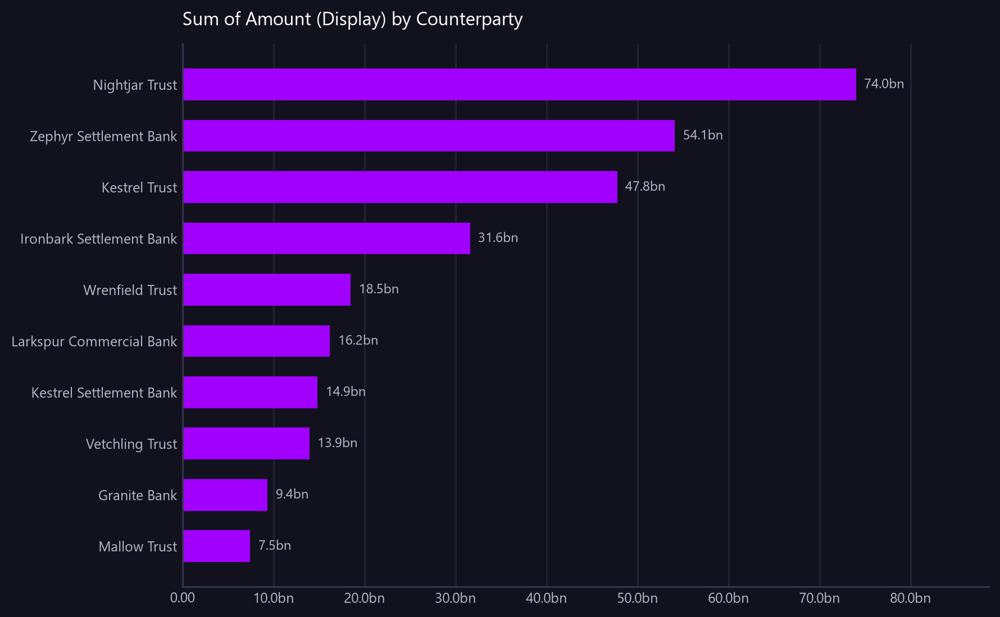

Sum of Amount (Display) by Counterparty
The ten counterparties carrying most ledger flow, with their share of the total.
Asked as Which counterparties account for the largest share of ledger flow? Show the top ten with their share of the total.

% of total Amount (Display) is a percentage and cannot share an axis with the amounts, so it is in the table only.
Commentary
The report identifies the top ten counterparties contributing to the total ledger flow, with Nightjar Trust leading at 25.72% of the total. Zephyr Settlement Bank and Kestrel Trust follow, accounting for 18.80% and 16.60%, respectively. These three counterparties alone represent over 60% of the total ledger flow, indicating a significant concentration among them. Operations should particularly note the dominance of Nightjar Trust, as its transactions constitute over a quarter of the total flow.
| Counterparty | Amount (Display) | % of total Amount (Display) |
|---|---|---|
| Nightjar Trust | 74,022,638,054.77 | 25.72 |
| Zephyr Settlement Bank | 54,108,323,920.02 | 18.80 |
| Kestrel Trust | 47,768,593,382.49 | 16.60 |
| Ironbark Settlement Bank | 31,604,464,455.66 | 10.98 |
| Wrenfield Trust | 18,492,103,189.51 | 6.42 |
| Larkspur Commercial Bank | 16,220,479,750.53 | 5.64 |
| Kestrel Settlement Bank | 14,852,611,968.76 | 5.16 |
| Vetchling Trust | 13,941,997,099.89 | 4.84 |
| Granite Bank | 9,365,898,488.50 | 3.25 |
| Mallow Trust | 7,454,667,883.15 | 2.59 |
Limitations of this view
- The view is scoped to the value date range from 2026-07-20 to 2026-08-18.
- Amounts are translated using static synthetic FX rates to GBP.
- This is synthetic, non-production data.
Downloads
{kind=link}
The Markdown documents everything considered, so a reader can hand it to an AI and ask follow-up questions about this view.
How this was produced
{
"view": "business_ledger",
"sheet": "Business Ledger Txn View",
"source_file": "synthetic_liquidity_month.xlsx",
"mode": "aggregate",
"filters": [],
"group_by": [
"Counterparty"
],
"time_bucket": null,
"measures": [
"sum of Amount (Display)"
],
"columns": [],
"sort_by": "Amount (Display)",
"limit": 10,
"join": null,
"derived": [],
"currency_corrections": [],
"data_as_of": "2026-08-18T21:35:41",
"measure": "Amount (Display)",
"aggregation": "sum",
"rows_in_view": 9780,
"rows_after_filters": 9780,
"rows_returned": 10,
"executed_at": "2026-08-20T11:30:13"
}